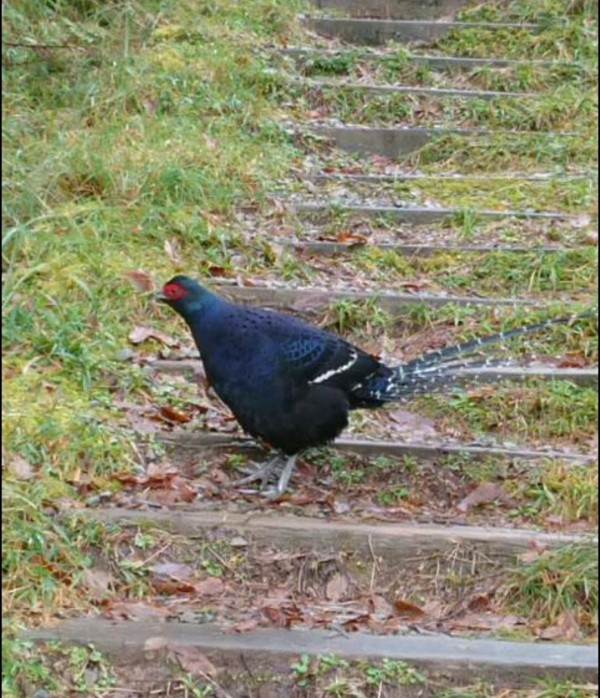

驚豔！千元鈔上的「國鳥」帝雉頻頻現蹤太平山

海拔２０００公尺的宜蘭縣太平山國
家森林遊樂區，帝雉（黑長尾雉）族
群數量增加，常跑出來悠閒覓食，華
麗高貴的羽毛，讓人驚豔不已。
帝雉列為世界近危鳥類，是台灣體形
最大特有種鳥類，被封為「國鳥」，
成為千元台幣背面重要圖案，主要分
布在玉山、雪霸及太魯閣國家公園的
中、高海拔山區，太平山過去並不常
見，近年來屢屢現蹤，顯示保育有成
。
太平山翠峰山屋工作人員黃清漢，民
國１０１年任職初期，偶爾在園區見
到帝雉，今年到山上自然步道漫步，
每兩趟就有一趟目睹帝雉在野外覓食
，出沒地點包括翠峰湖環山步道、望洋山步道、山毛櫸步道、翠峰景觀道路。
黃清漢說，清晨、黃昏是太平山帝雉最常出現時間點，多半單獨或１、２隻結伴覓食，他最
多看過７隻同行，身上繽紛亮麗羽毛，宛如穿上時髦衣裳，看過的人都會留下深刻印象。
帝雉生性機警又怕生，聽到吵雜聲音、沈重腳步聲，便躲進森林藏匿，黃清漢說，攬勝時放
輕腳步，便有機會與牠們不期而遇，一睹帝雉的廬山真面目。
原文網址：http://news.ltn.com.tw/news/life/breakingnews/2280375